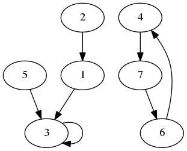

(org-babel-do-load-languages 'org-babel-load-languages '((emacs-lisp . t) (C . t) (python . t) (shell . t) ))
(defun my-org-confirm-babel-evaluate (lang body) (not (string= lang "ditaa")) (not (string= lang "C")) (not (string= lang "python")) (not (string= lang "shell")) ) ;don't ask for ditaa (setq org-confirm-babel-evaluate #'my-org-confirm-babel-evaluate)
코드
#+BEGIN_SRC python :results output :exports both
print("Hello")
#+END_SRC
#+RESULTS:
: Hello
소스 export
print("Hello")
결과
Hello
#+begin_src shell :results output :exports both echo "Hello World" #+end_src #+RESULTS: : Hello World
echo "Hello World"
Hello World
